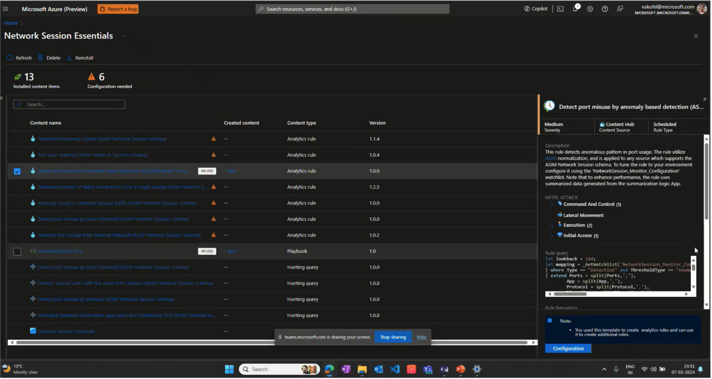
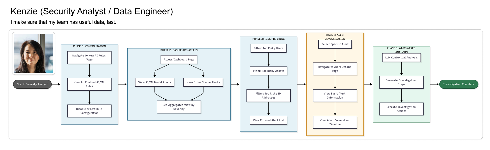
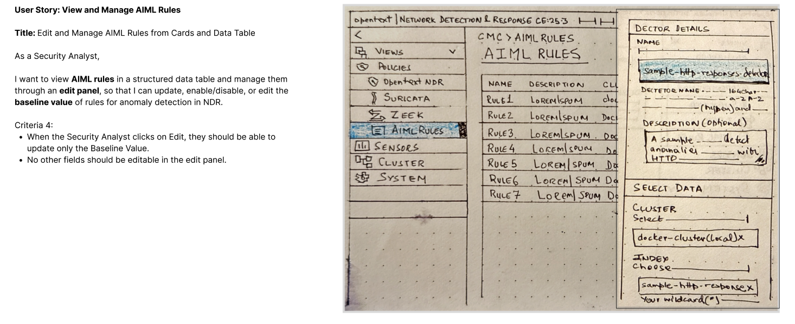
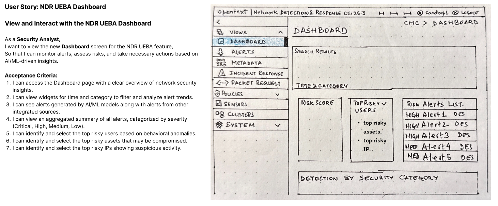
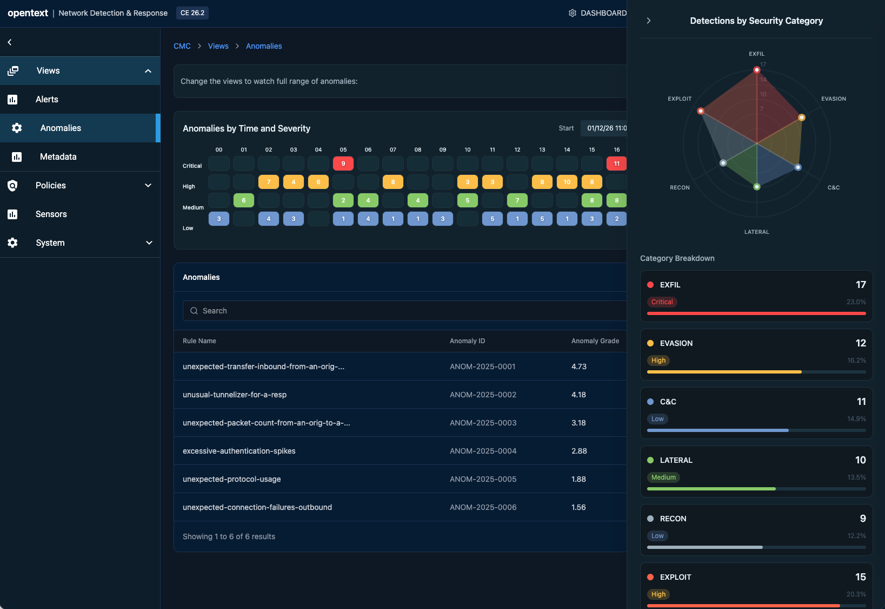
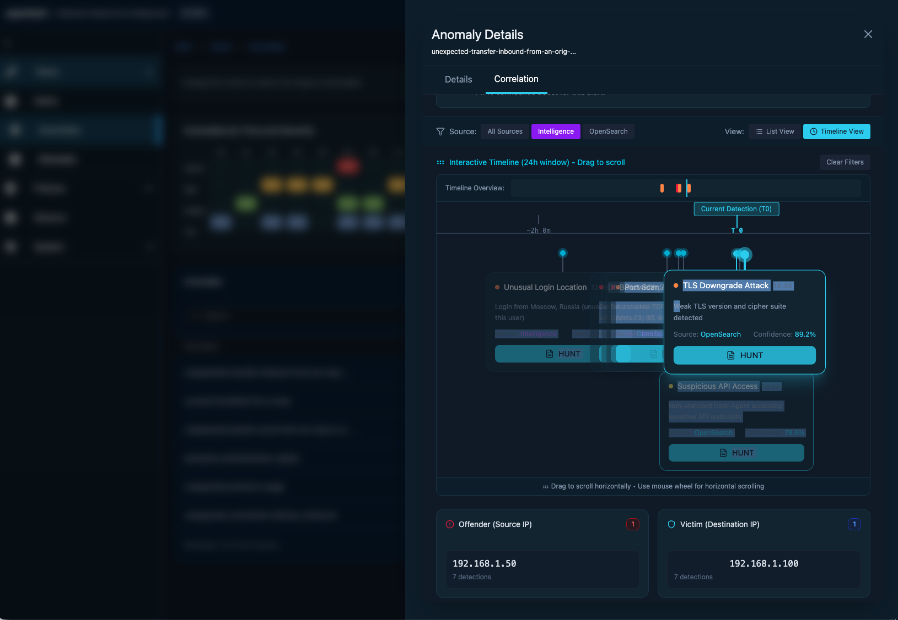
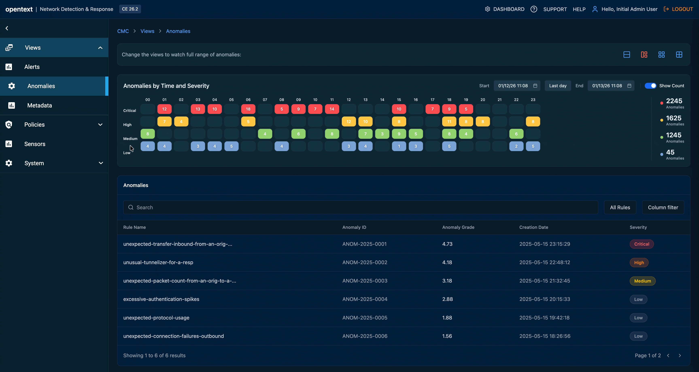

The network sees threats before the endpoint ever does
EDR protects endpoints — but networks catch anomalies at Day 0, across North-South and East-West traffic, before an attack reaches a single device. OpenText had the ML models and SIEM integrations. What it lacked was a design that made that intelligence usable.
The competitive angle: ExtraHop and Vertica AI used single-variable anomaly detection — one signal at a time. OpenText's Intersect Models could correlate multiple variables simultaneously: login time + location + data access + privilege level. That was the differentiator. The design challenge was making it feel simple, not complex — and doing it within the median analyst triage window of 15 minutes.
Four problems. Every customer said the same things.
20 interviews with SOC analysts and threat hunters. Competitive analysis across ExtraHop, Vertica AI, Microsoft Azure, CrowdStrike, and Wiz. The findings converged around four problems that no competitor had solved.
Hidden threats invisible to IDS
Traditional IDS and dashboards require prior domain knowledge and struggle with evolving threats. Behavioural anomalies at the network layer — especially multi-variable ones — were going completely undetected.
Detection gapAlert analysis too complex to act on
Analysts needed simpler, faster mechanisms to work through traffic alerts. The existing UI required domain expertise just to read the data — let alone act on it within the 15-minute triage window.
UsabilitySeverity buried — critical alerts lost in noise
There was no prioritised view. Analysts manually sorted through every anomaly. The most severe threats didn't surface first, and context was missing for quick decisions.
Signal-to-noiseNo way to tune for your environment
Every network is different. Analysts needed to set exceptions and adjust thresholds for their specific environment — but no tool gave them that control without ML expertise.
Customisation"By the time I've opened three tabs to correlate a single alert, my 15 minutes are already gone. I need the context in the row — not behind a click."— SOC Analyst, Level 2 · Research interview, 2024
Competitive Context

User Journey Map

The core tension: SOC analysts needed speed (15-minute triage windows), while threat hunters needed depth (24-hour investigation cycles). A single interface could serve neither well. This insight drove the entire dual-interface strategy.
The analyst who has 15 minutes to make the right call
Research surfaced a clear primary user — not a helpdesk generalist, but a trained analyst handling 40–80 alerts per shift, correlating behavioral signals with network data, and making escalation decisions under real time pressure.
Security Operations Center
Secondary user — Threat Hunter (SOC Level 3): proactively hunts using historical behavior trends, multi-variable correlation, and custom anomaly thresholds. Needs depth and query power — not the same interface as Marcus. This tension between speed and depth drove the dual-interface design strategy.
Lo-fi first — sketching the rules builder
Before touching hi-fi, I sketched the interaction model for the rules builder — the most novel UI challenge. How do you make rule creation approachable for a non-ML user without hiding the power a threat hunter needs?


The key lo-fi decision: rules as visual objects, not code. Conditions rendered as connected blocks rather than script syntax — bringing the builder within reach of analysts who understand logic but not ML. This became the foundational pattern for all subsequent security rules UIs at OpenText.
Analyst dashboard — severity first, context always
The hi-fi anomalies dashboard was designed around one constraint: every piece of information an analyst needs to make a triage decision must be visible in the alert row — no clicking, no expanding, no hunting.

The design decision that changed the architecture: MITRE ATT&CK classification had to appear in the list row, not behind a detail click. This required ML engineering to surface classification data in the alert payload — a design requirement reshaping the data contract.
Threat Hunter Workbench — same data, different interaction model
When Elena investigates an anomaly, she needs correlation tools, historical context, and topology exploration. A completely different interaction model — depth over speed, breadth over brevity.

Experience the design live
This prototype was one of my first explorations using Figma Make's AI prompting interface — describing interactions in natural language and watching them come to life instantly. It cut iteration time dramatically and sharpened how I think about prompting AI for design. Test alert triage workflows, build custom rules, and explore the topology investigation interface. No login required.
The full picture — analyst triage to hunter investigation
The final design brings both interfaces into a unified platform. From a single alert in the analyst dashboard, context flows seamlessly into the hunter workbench — two distinct experiences sharing one coherent data model.

Three decisions. Measured outcomes.
"Don't compete on visual sophistication. Compete on analyst efficiency. Speed and clarity beat aesthetics every time."— Core positioning recommendation, presented to Product Leadership, Q3 2024
Classify in the row, not the detail panel
MITRE ATT&CK classification surfaced in the alert row itself — requiring an ML pipeline contract change. Risk scores became the primary sort axis so the most severe anomalies surface first. One-click escalation to SIEM, TDR, or SOAR with full context attached — nothing lost in the handoff.
Two interfaces, one data model
Analyst dashboard for speed — built around the 15-minute triage window. Hunter workbench for depth — supporting 24-hour investigation cycles. Both built on a shared data layer so context flows between them without duplication or copy-paste overhead.
Visual rules builder — no ML expertise required
Filter and tune by user, IP, or asset without ML expertise — making threshold configuration self-service for the first time. Triage-first UX principles carried forward as a portfolio standard across ZENworks, ILM, and future OpenText security products.